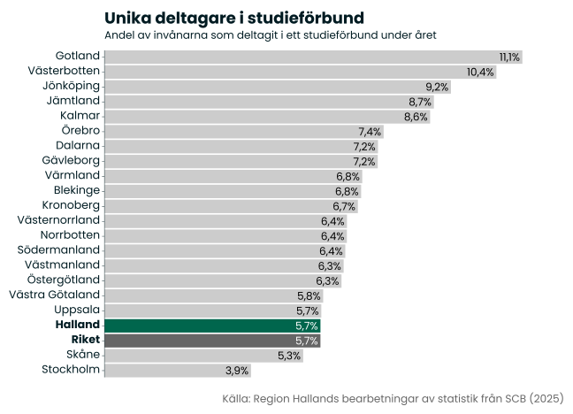
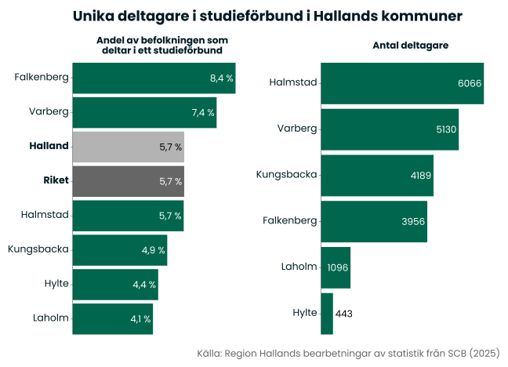
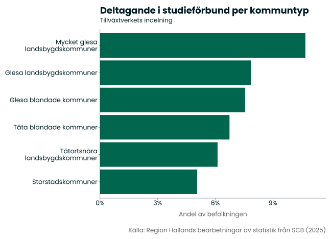
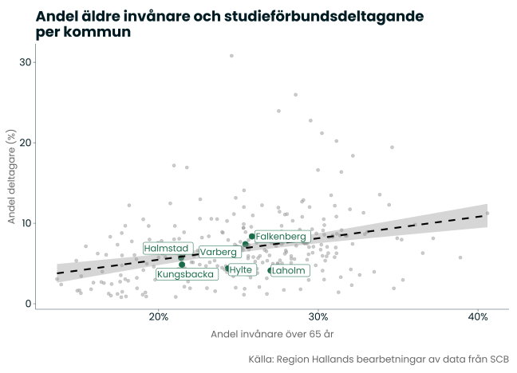
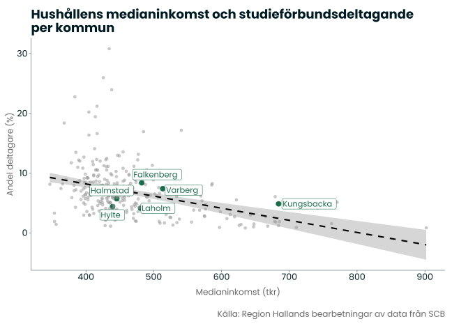
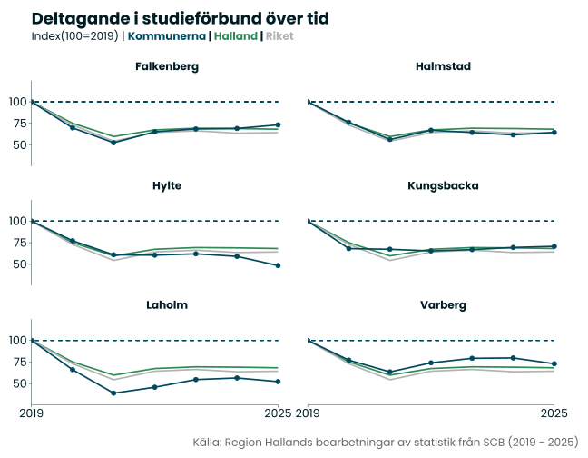
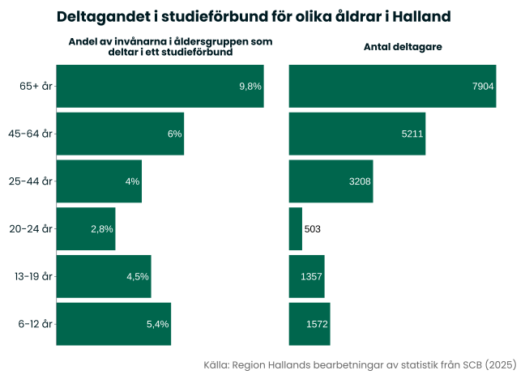
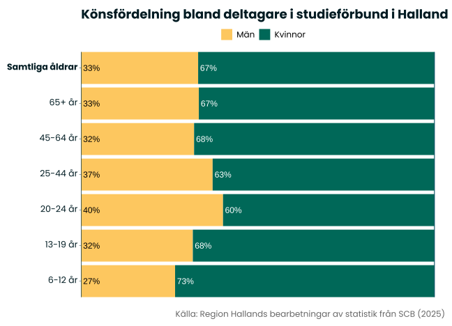
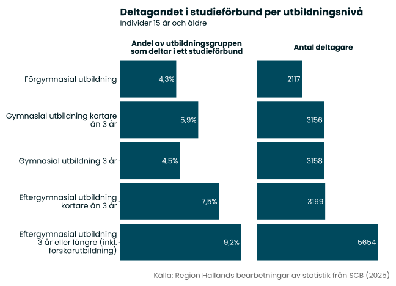
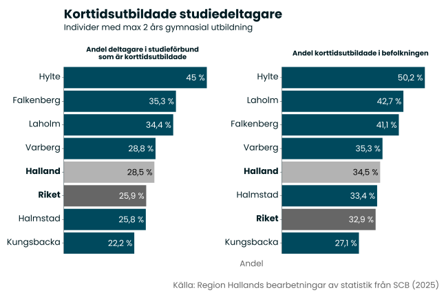

Studieförbund
Om indikatorn
I det här kapitlet mäter vi deltagandet i aktiviteter som genomförs av studieförbund. Studieförbund är organisationer som syftar till att skapa mötesplatser för folkbildning och kultur. Bakom de åtta statsbidragsberättigade studieförbunden i Sverige står folkrörelser och organisationer, där varje studieförbund har en tydlig profil. Studieförbunden är en del av civilsamhället och en stor del av studieförbundens arbete sker ideellt. Studieförbundens verksamhet utgörs exempelvis av studiecirklar och kulturprogram. Kulturprogrammen kan exempelvis vara teater, sång, föreläsningar eller konst som framförs inför publik. En stor del av studieförbundens utbud arrangeras av föreningar som är medlemmar eller samarbetsorganisationer till förbunden, med stöd från studieförbunden.
Deltagare i studieförbundens verksamheter avgränsas i det här kapitlet till de som deltagit i aktiviteter som genomförts med statsbidrag. Det är också viktigt att känna till att deltagare i aktiviteter som genomförs av andra aktörer (men med stöd av studieförbunden) inte ingår i statistiken. Statistiken avser dessutom enbart deltagare i studiecirklar och annan folkbildningsverksamhet, vilket betyder att deltagare i kulturprogram inte ingår i statistiken.
När vi studerar den historiska utvecklingen är det också viktigt att känna till att storleken på det generella statsbidraget till studieförbunden varierar över tid, vilket också påverkar studieförbundens förutsättningar att bedriva sin verksamhet. 2023 beslutade riksdagen att minska det generella statsbidraget till studieförbunden under en treårsperiod. Totalt minskar det statliga anslagen med 500 miljoner kronor under åren 2024 till 2026.
Deltagande i studieförbund
Under 2025 deltog 19 814 personer i studieförbundens folkbildningsverksamhet i Halland. Det motsvarar 5,7 % av Hallands invånare, vilket är i nivå med riksgenomsnittet. Riksgenomsnittet påverkas emellertid mycket av storstadsregionerna som, jämfört med andra regioner, har ett lågt deltagande i studieförbunden. Jämför vi med andra regioner har Halland det tredje lägsta deltagandet i studieförbund i landet, och ligger endast före Skåne och Stockholm i detta avseende.
Jämför vi kommunerna ser att vi att deltagandet i stort följer kommunernas invånarantal, med flest deltagare i Halmstad och lägst antal i Hylte. Men ställer vi det i relation till kommunernas storlek ser vi att Falkenbergs invånare är de som i högst utsträckning deltar i studieförbundsverksamhet, då 8,4 % av kommunens befolkning deltog i ett studieförbund under 2025. Även Varberg ligger högre än riksgenomsnittet, med ett deltagande på 7,4 %. I fallande ordning kommer sedan Halmstad (5,7 %), Kungsbacka (4,9 %), Hylte (4,4 %) och Laholm (4,1 %).

Varför deltagandet i studieförbunden varierar mellan olika delar av landet har många potentiella förklaringar. Folkbildningsrörelserna växte fram ur olika sociala rörelser, såsom nykterhetsrörelsen, arbetarrörelsen och frikyrkorörelsen, som historiskt haft olika stor förankring i olika delar av landet.
Ett tydligt mönster är att storstadskommuner har ett lägre deltagande än landsbygdskommuner. En möjlig förklaring till detta är att flera av studieförbunden har sitt ursprung i landsbygds- och jordbruksrörelserna, vilket kan ha gett rörelsen en särskilt stark historisk förankring utanför städerna. En annan potentiell förklaring till sambandet är att större städer generellt har ett större utbud av aktiviteter som “konkurrerar” med studieförbundens erbjudanden.

Statistiken visar också andra tydliga samband. Kommuner med en äldre befolkning har generellt ett högre deltagande än andra kommuner. Det tycks också finnas en socioekonomisk dimension som delförklaring till skillnader i deltagande i studieförbund. Vi ser exempelvis att kommuner med höga inkomster generellt har ett lägre deltagande i studieförbundens verksamheter, ett samband som är signifikant även när vi kontrollerar för kommunernas storlek. Möjligen vittnar sambandet om att individer med hög köpkraft har möjlighet att ta del av ett större bildnings- och kulturutbud, samtidigt som studieförbunden har en viktig roll att nå mer utsatta grupper i samhället.


Att Halland har ett lägre deltagande i studieförbunden än många andra regioner följer därför ett mönster vi ser nationellt, där storstadsregioner och angränsande regioner generellt har ett lägre deltagande i studieförbunden än övriga landet.
Historisk utveckling
Deltagandet i studieförbund minskade kraftigt under pandemin och har därefter inte lyckats återhämta sig. Perioden 2019 till 2021 minskade antalet deltagare från 29 011 till 17 347 i Halland, vilket motsvarar en minskning med 11 664 deltagare (-40 %). Åren 2021 - 2023 syntes en viss återhämtning, men de senaste två åren har deltagandet i Halland återigen minskat. Under 2025 minskade antalet deltagare med 213 (-1 %). Jämför vi med tiden innan pandemin ligger deltagandet idag på 68 % av de nivåer som rådde då, vilket är något bättre än riksgenomsnittet på 64 %.
I samtliga kommuner syns liknande mönster som för länet som helhet, men med viss variation. Laholm var den kommun som i relativa termer drabbades hårdast under pandemin med en minskning på 1278 deltagare (-61 %). Deltagandet ökade därefter årligen, för att sedan minska med 88 deltagare (-7 %) under 2025. Idag är deltagarantalet bara 52 % av de nivåer som rådde innan pandemin, vilket är lägre än både Halland som helhet och riksgenomsnittet.
Falkenberg är den hallandskommun som drabbades näst hårdast under pandemin. Deltagarantalet minskade med 2254 under perioden, vilket motsvarar en minskning med 47 %. Men efter pandemin har deltagandet ökat årligen och man har nu återhämtat sig till 73 % av de nivåer som rådde innan pandemin, vilket är långt över snittet för både Halland och riket. Under 2025 ökade antalet deltagare med 224 (+6 %) vilket är den starkaste utvecklingen i Halland under perioden.
I Halmstad minskade antalet deltagare med 4094 under pandemin (-44 %). Återhämtningen efter pandemin var relativt svag för Halmstad, men under 2025 ökade antalet deltagare med 273 (+5 %) vilket är den näst starkaste ökningen i Halland. Jämför vi med tiden innan pandemin ligger deltagandet i Halmstad idag på 65 % av de nivåer som rådde då, vilket är en högre nivå än riksgenomsnittet, men något lägre än Halland som helhet.
I Hylte minskade antalet deltagare med 355 (-39 %) under pandemin, vilket betyder att kommunen i relativa termer klarade sig bättre än såväl riksgenomsnittet som Hallands som helhet. Återhämtningen efter pandemin har däremot varit svag och kommunen ligger idag på 49 % av de deltagarnivåer som rådde innan pandemin. Det senaste året minskade antalet deltagare med 97 (-18 %) vilket är den svagaste utvecklingen i Halland under perioden.
Även Varberg klarade sig jämförelsevis lindrigt undan pandemin (jämfört med riksgenomsnittet och Halland som helhet). Deltagandet minskade med 2561 (- 36 %) och efterföljande år var återhämtningen stark. Under 2025 minskar dock deltagandet relativt kraftigt med 472 deltagare (-8 %). Kommunen har idag ett deltagande som motsvarar 73 % av de nivåer som rådde innan pandemin, vilket är högre än både Halland som helhet och riksgenomsnittet.
Kungsbacka är den kommun som i relativa termer klarade sig bäst under pandemin då deltagandet bara minskade med 33 % under perioden (-1926 deltagare). Efter pandemin har deltagarantalet ökat marginellt på årsbasis. Under 2025 ökade antalet deltagare med 75 (+2 %). Deltagarnivåerna i Kungsbacka ligger idag på 71 % av nivåerna från 2019, vilket är högre än både Halland som helhet och riksgenomsnittet.

Åldersfördelning och kön
Det finns ett tydligt samband mellan ålder och deltagande i studieförbund. Viktigt att notera är att en deltagare måste fylla 13 år för att delta i en studiecirkel eller 6 år för att delta i annan folkbildningsverksamhet. Dessvärre publiceras inte statistiken i redovisningsgrupper som är anpassade efter dessa åldersbegränsningar. När det gäller de yngsta deltagarna i studieförbunden väljer SCB samla dessa i gruppen ”0 - 12 år”. Av anledning av de åldersbegränsningar som finns väljer vi att redovisa denna grupp som deltagare i åldern 6 - 12 år.
Jämför vi deltagandet mellan olika åldersgrupper ser vi att de flesta av deltagarna tillhör gruppen 65 år och äldre. Drygt 7900 av deltagarna tillhör åldersgruppen, vilket motsvarar 40 % av samtliga hallänningar som deltar i studieförbundens verksamhet. Den nästa största åldersgruppen är de mellan 45 - 64 år som står för drygt 5200 deltagare, vilket motsvarar 26 % av samtliga deltagare. Den tredje största gruppen är individer mellan 25 - 44 år som står för drygt 3200 deltagare (16 % av samtliga).
När vi går ner i de yngre åldersgrupperna bryts emellertid sambandet mellan ålder och deltagande. Den fjärde största gruppen deltagare är nämligen barn mellan 6 - 12 år (knappt 1600 individer) som står för 8 % av samtliga deltagare. I fallande ordning kommer sedan gruppen 13 - 19 år (knppt 1400 deltagare) och 20 - 24 år (500 deltagare).
Att jämföra åldersgrupperna i förhållande till absoluta tal är möjligtvis en orättvis jämförelse då grupperna är olika stora. Men om vi ställer deltagandet i relation till gruppernas storlek ser vi i stort sett samma mönster, med viss variation.
Nästan var 10e invånare i åldern 65 år eller äldre har deltagit i ett studieförbund under 2025. 6 % av invånarna i åldern 45 - 64 år har deltagit och motsvarande siffra för gruppen 25 - 44 år är 4 %. För gruppen 20 – 24 år ligger deltagandet på 2,8 % och för gruppen 13 – 19 år ligger nivån på 4,5 %. Med andra ord är det relativa deltagandet något högre bland tonåringar jämfört med gruppen 25 - 44 år. Den yngsta gruppen, 6 – 12 år, har det tredje högsta relativa deltagandet bland åldersgrupperna (5,4 %).
Sammantaget visar jämförelsen att deltagandet i studieförbundens verksamhet generellt är högre bland regionens äldre invånare, oavsett om vi studerar absoluta eller relativa tal. För de yngre åldersgrupperna är deltagandet lägre i jämförelse, med undantag för de allra yngsta i befolkningen där deltagandet är relativt högt.

Kvinnor deltar i studieförbundens verksamheter i högre utsträckning än män. 67 % är kvinnor när vi studerar hela gruppen deltagare. Jämför vi mellan åldrar är skillnaden som störst bland gruppen 6 - 12 år, där hela 73 % av deltagarna är flickor. Den åldersgrupp med jämnast fördelning är gruppen 20 - 24 år, där kvinnor står för 60 % av deltagarna. I övrigt varierar andelen kvinnor från 63 % till 68 % för de olika ålderskategorierna.

Utbildningsnivå
Som tidigare nämnt har studieförbunden en folkbildande uppgift. Därför är det intressant att se hur deltagandet varierar beroende på utbildningsnivå. Liksom vi såg att äldre generellt deltar i högre utsträckning än yngre ser vi också att högutbildade i högre utsträckning deltar i studieförbundens verksamhet än korttidsutbildade.
Flest deltagare hittar vi i gruppen med minst 3 års eftergymnasiala studier. Drygt 5700 deltagare tillhör denna utbildningskategori, vilket motsvarar 29 % av samtliga deltagare över 15 år. Lägst antal deltagare hittar vi i gruppen med förgymnasial utbildning (2100) som står för 11 % av deltagarna. Övriga tre utbildningsgrupper, gymnasial utbildning kortare än 3 år, gymnasial utbildning på 3 år och eftergymnasial utbildning kortare än 3 år, är ungefär lika stora med omkring 3200 deltagare vardera (ungefär 16 % av det totala antalet deltagare över 15 år).
Ställer vi deltagandet i relation till hur stora grupperna är blir det tydligare i vilken utsträckning olika utbildningsnivåer deltar i studieförbundens verksamhet. 4,3 % av de med förgymnasial utbildning deltog i ett studieförbund under 2025. Går vi upp ett steg i utbildningsnivå (individer med gymnasial utbildning kortare än 3 år) ligger andelen som deltar på 5,9 %. För personer med gymnasial utbildning på 3 år är deltagandet lägre än för de med kortare gymnasial utbildning. 4,5 % av gruppen deltog i studieförbundens verksamhet under året.
I gruppen med en eftergymnasial utbildning kortare än 3 år deltog 7,5 % i studieförbundens verksamhet. Högst är deltagandet bland individer med eftergymnasial utbildning som är 3 år eller längre. 9,2 % av individerna i denna kategori deltog i ett studieförbund under året.

